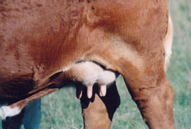

Texas Ranching Conservancy 
|
| TRAITS | HIGHLY DESIRABLE | UNACCEPTABLE |
|---|---|---|
| Udder depth | Moderately deep | Very deep or very shallow |
| Fore udder | Tightly attached, attachment extended well forward | Pendulous and loosely attached |
| Rear udder height and width | Very high and wide | Very low and narrow |
| Center udder support | Moderately defined | Very flat, lacking definition or very defined |
| Quarter development | Four quarters equally developed | One or more quarters very under or over developed |
| Teat size | Four teats moderate in size | One or more teats very large or very small |
| Teat placement | Moderately wide | Very wide or very close |
| Pigmentation | Very heavy | Very slight to none |
|
Back to TRC's management tools
http://www.texasranchingconservancy.com/udderguide.html | |